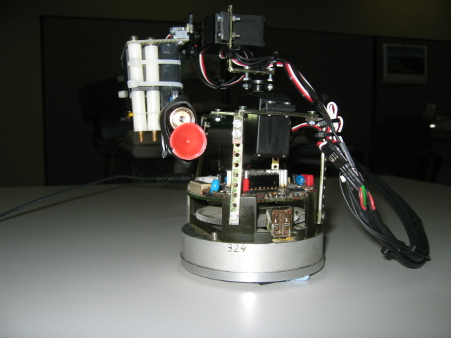
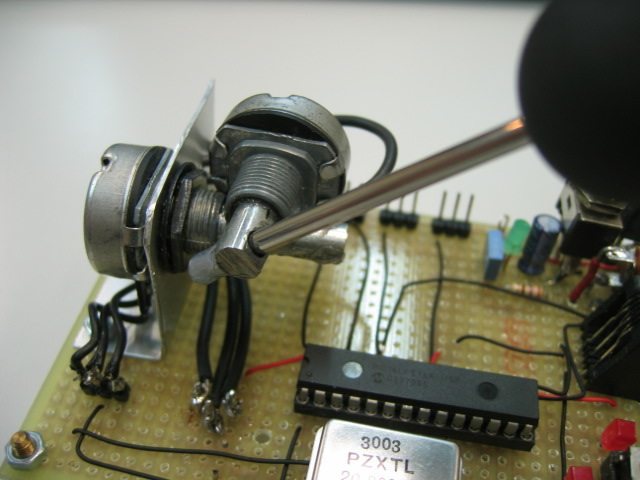
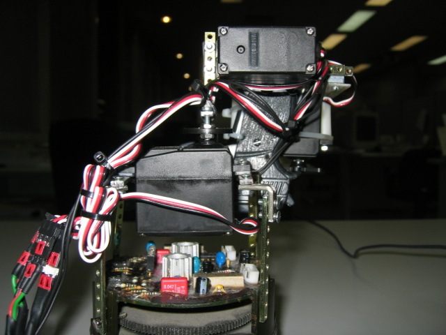
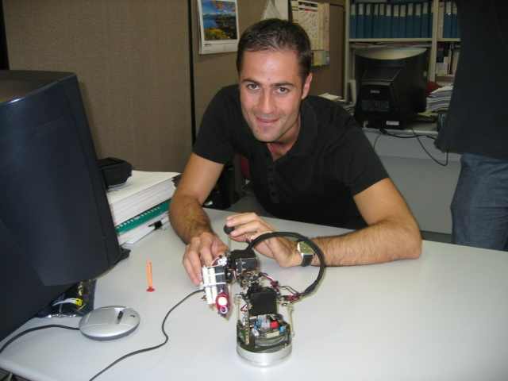
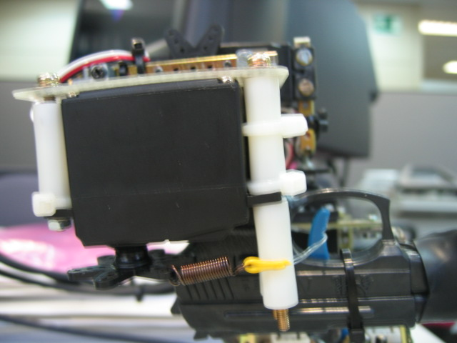

|
SERVO CAÑÓN CON PIC |
|
 |
Aquí están las armas de destrucción masiva que todo el mundo anda buscando. Se trata de un servocañón móvil con
apuntador láser. La tecnología utilizada es casera para no levantar sospechas, se utilizan dos servomecanismos para controlar la plataforma y
otro para disparar mediante la técnica llamada "aprieta el gatillo" . Para mover la plataforma se utiliza un joystick hecho con dos
potenciómetros, para apuntar y disparar dos botones. El cerebro de la máquina es un microcontrolador
PIC16F876.
Como podreis apreciar en las fotos y en el video, es una aplicación divertida, de bajo coste y que se puede hacer
perfectamente con un microcontrolador PIC.




David Garrido
Microcontrolador PIC16F876 .
Dos potenciómetros para controlar movimiento plataforma.
Puntero láser para seleccionar blanco.
Pistola de juguete.
Pulsador de apuntamiento y disparo
|
Descarga de ficheros |
| Servoca.avi | Video demostración de la aplicación |
| fotos.zip | Fotos del diseño |